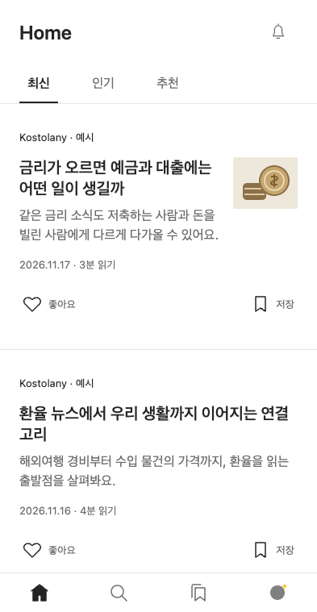

Left: reference normalized to 393×852, cropped OS areas 59/34. Right: actual browser 393×759. Header and bottom bar are this Goal’s scope; cards and feed tabs are pending Goal 16. Font and SVG differences remain.
